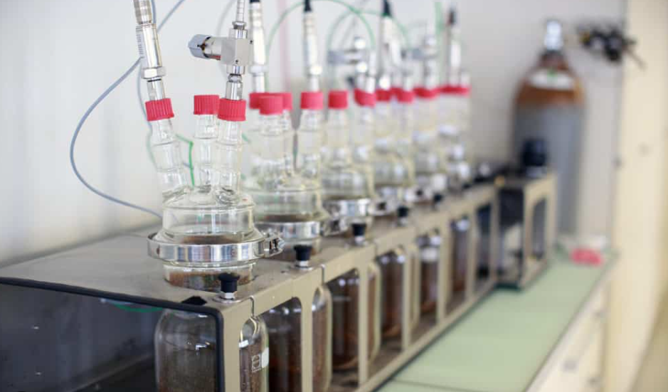

En un coup d'œil :
Process où on inocule des bactéries lactiques (LAB) combinées avec d'autres souches (levures, bactéries acétiques contrôlées) pour créer des profils complexes et équilibrés. Résultat : acidité multicouche (lactique + malique + citrique), texture crémeuse, fruité équilibré, complexité aromatique maximale. C'est le café "orchestré", où chaque micro-organisme joue sa partition.
Comprendre : L'orchestre microbien
Le principe de l'inoculation mixte
Définition technique :
On inocule plusieurs souches microbiennes (2–5 types différents) dans la même fermentation pour créer des interactions synergiques.
Différence avec mono-inoculation :
| Critère | Mono-inoculation | Inoculation mixte |
|---|---|---|
| Souches | 1 type (ex: Lactobacillus seul) | 2–5 types combinés |
| Complexité | Profil ciblé, simple | Multicouche, complexe |
| Interactions | Aucune | Synergiques ou compétitives |
| Stabilité | Élevée | Moyenne (gestion plus complexe) |
| Profil | Net, direct | Équilibré, profond |
En clair : Mono = soliste. Mixte = orchestre.
Les combinaisons classiques
Combinaison 1 : LAB + Levures (la plus courante)
Exemple :
•Lactobacillus plantarum (acidité lactique, douceur)
•Saccharomyces cerevisiae (esters fruités, alcool)
Résultat : Acidité veloutée + fruité équilibré
Combinaison 2 : LAB multiples (acidité complexe)
Exemple :
•Lactobacillus plantarum (acide lactique dominant)
•Leuconostoc mesenteroides (diacétyle, texture crémeuse)
•Pediococcus (stabilité, acidité douce)
Résultat : Texture crémeuse multicouche, acidité ronde
Combinaison 3 : LAB + Levures aromatiques (complexité maximale)
Exemple :
•Lactobacillus plantarum (base lactique)
•Pichia kluyveri (floral, esters légers)
•Torulaspora delbrueckii (fruité tropical, texture)
Résultat : Crémeux + floral + tropical = complexité extrême
Combinaison 4 : LAB + Acétiques contrôlées (expérimental)
Exemple :
•Lactobacillus (acidité douce)
•Acetobacter pasteurianus (traces acide acétique contrôlé)
Résultat : Acidité vive mais équilibrée, notes vinées élégantes
⚠️ Risqué : Acetobacter peut dériver vers sour si mal géré.
Pourquoi l'inoculation mixte existe
Le constat :
Les fermentations spontanées naturelles sont déjà des "inoculations mixtes" (50–100 souches cohabitent). Mais c'est aléatoire et incontrôlable.
L'innovation :
En inoculant des souches sélectionnées en proportions définies, on garde :
•✅ La complexité du spontané
•✅ La reproductibilité du mono-inoculé
C'est comme passer d'un orchestre improvisé (spontané) à un orchestre dirigé (mixte inoculé).
Maîtriser : Le protocole technique
Phase 1 : Récolte et préparation
Objectif : Cerises mûres (≥18 °Brix), charge microbienne réduite
Pourquoi réduire la flore sauvage ?
Pour que les souches inoculées dominent sans compétition excessive.
Tri + Sanitisation :
•Flottaison : éliminer flottants
•Visuel : retirer défauts
•Lavage chlore doux (optionnel mais recommandé) :
•Solution 50 ppm chlore actif
•Trempage 2–5 min
•Rinçage abondant
•Réduit flore sauvage 90%+
Choix du substrat :
•Dépulpé + mucilage (recommandé) → fermentation homogène
•Cerises entières (plus complexe)
Phase 2 : Sélection et préparation des souches
Stratégie de combinaison :
Approche A : Dominance LAB + support levures (70/30)
Ratio :
•70% Lactobacillus (dominance acidité lactique)
•30% Levures (support fruité)
Profil cible : Crémeux dominant, fruité secondaire
Approche B : Équilibre LAB/Levures (50/50)
Ratio :
•50% LAB
•50% Levures
Profil cible : Équilibre parfait acidité/fruité
Approche C : Complexité multicouche (40/40/20)
Ratio :
•40% LAB (base lactique)
•40% Levures fermentaires (esters classiques)
•20% Levures aromatiques (floral/tropical)
Profil cible : Complexité maximale
Protocole de réhydratation (toutes souches) :
•Préparer eau bouillie refroidie à 35–40°C
•Réhydrater chaque souche séparément :
•LAB : 10 g dans 100 mL eau (ratio 1:10)
•Levures : 10 g dans 100 mL eau
•Laisser activer 20–30 min (mousse visible)
•Mélanger les starters selon ratios choisis
•Calculer volume total selon lot café
Densité cible finale (mélange total) : 10⁶–10⁷ cellules/mL viables
Phase 3 : Inoculation et mise en cuve
Protocole :
•Placer le café (dépulpé/cerises) en cuve propre
•Verser le mélange de starters uniformément
•Mélanger délicatement pour répartir
•Fermer la cuve (semi-hermétique ou anaérobie selon profil)
•Installer valve de dégazage + thermomètre
Environnement optimal :
| Paramètre | Valeur cible | Impact |
|---|---|---|
| Température | 20–24°C | Optimal toutes souches |
| pH initial | 5,0–5,5 | Favorise LAB + levures |
| O₂ | Faible (cuve fermée) | Force fermentation |
| Nutriments | Mucilage (14–20°B) | Suffisant |
Phase 4 : Fermentation en co-culture (orchestration microbienne)
Durée typique : 36–72h (selon combinaison)
Température cible :
| Plage T° | Profil | Dominance |
|---|---|---|
| 18–20°C | LAB dominant, levures lentes | Crémeux > Fruité |
| 20–24°C | ✅ Optimal : équilibre LAB/Levures | Équilibré |
| 24–26°C | Levures dominant, LAB rapide | Fruité > Crémeux |
| >26°C | ❌ Risque acétiques | Sour probable |
Ce qui se passe biologiquement :
Phase 1 : Installation et compétition (0–24h)
Compétition pour ressources :
•LAB commencent à acidifier (pH 5,5 → 5,0)
•Levures consomment O₂ résiduel
•Les deux produisent CO₂
Interactions positives (synergie) :
•LAB produisent vitamines (B1, B6) → nourrissent levures
•Levures produisent alcools légers → substrat pour LAB (production esters)
•LAB dégradent pectines → facilitent fermentation levures
Produits initiaux :
•Acide lactique (traces, commence)
•CO₂ (respiration levures)
•Chaleur (+1–2°C)
Phase 2 : Fermentation active synergique (24–60h)
Chaque souche joue sa partition :
LAB (Lactobacillus, Leuconostoc) :
•Glucose → Acide lactique (0,5–2,0 g/L)
•Citrate → Diacétyle (beurré, crème)
•Mannitol (douceur, texture)
Levures fermentaires (Saccharomyces) :
•Glucose → Éthanol (2–6%) + CO₂
•Formation esters classiques :
•Isoamyl-acétate (banane, poire)
•Éthyl-butanoate (ananas)
•Éthyl-hexanoate (pomme, fruit jaune)
Levures aromatiques (si présentes : Pichia, Torulaspora) :
•Production esters légers (acétate de phényléthyle → miel, rose)
•Libération terpènes (linalol, géraniol → floral)
•Formation lactones (pêche, abricot)
Interactions clés :
•Éthanol (levures) + Acide lactique (LAB) → Éthyl-lactate (fruité lacté unique)
•Acides (LAB) + Alcools (levures) → Esters complexes (synergie)
Phase 3 : Stabilisation et équilibre (60–72h)
•pH atteint 4,0–4,5 (stabilisé)
•LAB ralentissent (auto-inhibition acidité)
•Levures ralentissent (sucres consommés, éthanol élevé)
•Profil aromatique se fixe : multicouche équilibré
Suivi de la fermentation :
| Paramètre | Début | Milieu (36h) | Fin |
|---|---|---|---|
| pH | 5,0–5,5 | 4,5–5,0 | 4,0–4,5 |
| T° interne | Ambiante | +2–4°C | Stable |
| Activité valve | Modérée | ✅ Intense | Ralentit |
| Odeur | Neutre | Lacté + fruité | Crémeux + fruité complexe |
Indicateurs de fin optimale :
•pH stabilisé 4,0–4,5
•Odeur : crémeux + fruité équilibré, pas vinaigre
•Goût liquide : doux-acide-fruité harmonieux
Phase 5 : Lavage et arrêt fermentation
Protocole standard :
•Drainer liquide fermentation
•Laver eau claire abondamment
•Rincer jusqu'à disparition mucilage
•Égoutter
Phase 6 : Séchage post-fermentation
Paramètres (similaires Lactic) :
| Phase | Durée | T° max | Brassage |
|---|---|---|---|
| Initiale | 2–3 j | 30°C | 4–5×/jour |
| Intermédiaire | 3–5 j | 35°C | 3×/jour |
| Finale | 2–4 j | 40°C | 2×/jour |
Vitesse : <1,2% H₂O/jour
Phase 7 : Repos en parche
Durée : 6–8 semaines
Objectif :
•Stabilisation profil multicouche
•Maturation interactions LAB/Levures
•Intégration complexité aromatique
Approfondir : Chimie et synergie microbienne
Molécules clés formées en inoculation mixte
L'inoculation mixte se distingue par une combinaison unique de molécules lactiques + esters fruités.
| Molécule | Famille | Arôme | Origine | Concentration |
|---|---|---|---|---|
| Acide lactique | Acide | Velouté, yaourt | LAB | Très élevée |
| Éthyl-lactate | Ester | Fruité lacté (unique !) | LAB + Levures (synergie) | Élevée |
| Diacétyle | Cétone | Beurre, crème | LAB (Leuconostoc) | Élevée |
| Isoamyl-acétate | Ester | Banane, poire | Levures | Moyenne-élevée |
| Éthyl-butanoate | Ester | Ananas, mangue | Levures | Moyenne |
| Acétate de phényléthyle | Ester | Miel, rose | Levures aromatiques | Moyenne (si Pichia) |
| Linalol | Terpène | Floral | Levures aromatiques | Traces (si Pichia) |
Molécule signature : Éthyl-lactate
C'est la molécule clé de l'inoculation mixte :
•Formée par réaction chimique entre éthanol (levures) et acide lactique (LAB)
•Arôme : fruité lacté unique, impossible à obtenir autrement
•Concentration : 5–10× supérieure aux mono-inoculations
Profil sensoriel — La complexité harmonieuse
| Attribut | Lactic seul | Levures seules | Inoculation mixte |
|---|---|---|---|
| Acidité (type) | Lactique pure | Mixte variable | Multicouche (lactique + malique + citrique) |
| Douceur | ⭐⭐⭐⭐⭐ | ⭐⭐⭐ | ⭐⭐⭐⭐⭐ |
| Fruité | ⭐⭐ | ⭐⭐⭐⭐⭐ | ⭐⭐⭐⭐ |
| Texture | ⭐⭐⭐⭐⭐ | ⭐⭐⭐ | ⭐⭐⭐⭐⭐ |
| Complexité | ⭐⭐⭐ | ⭐⭐⭐⭐ | ⭐⭐⭐⭐⭐ |
| Équilibre | ⭐⭐⭐ | ⭐⭐⭐ | ⭐⭐⭐⭐⭐ |
Descripteurs typiques d'une bonne inoculation mixte :
•Acidité multicouche : lactique (base) + malique (vivacité) + citrique (fraîcheur)
•Texture crémeuse : diacétyle + mannitol → velours
•Fruité équilibré : fruits rouges doux (fraise, cerise), pas explosif
•Notes lactées : yaourt, crème fraîche, beurre léger
•Floral délicat (si Pichia) : jasmin léger, miel
•Finale longue complexe : persistance crémeuse + fruité + acide
•Équilibre parfait : aucune note ne domine, harmonie
En tasse, une inoculation mixte est reconnaissable : complexité immédiate, équilibre parfait (pas d'excès), profondeur multicouche.
En pratique : Roast tips pour Inoculation mixte
Comportement du grain
Particularité : Profil multicouche (LAB + Levures) → besoin torréfaction qui révèle toutes les facettes sans en masquer aucune.
Conséquence : Torréfaction équilibrée avec développement moyen-long pour intégrer acidités + révéler fruité + préserver texture.
Profil recommandé (base Loring)
Charge : 190–195°C
↓
Drying : 4–5 min, ROR 20–24°C/min progressif
→ évaporer eau, préparer grain
↓
Maillard : 28–32%, ROR 10–14°C/min constant
→ développer complexité, équilibrer acidités
↓
Premier Crack : 198–202°C
↓
Développement : 13–15% (moyen-long)
→ ROR 4–6°C/min, descente douce
→ intégrer acidité multicouche + révéler fruité
↓
Drop : 203–206°C (filtre/espresso)
Pourquoi ce profil spécifique
| Phase | Justification |
|---|---|
| Charge modérée | Préserver esters fruités (levures) + texture (LAB) |
| Maillard moyen-long | Révéler toutes les couches (LAB + Levures) sans masquer |
| Développement moyen-long | Intégrer acidités multiples (lactique + malique + citrique) |
| Drop moyen | Équilibre entre vivacité (acidités) et rondeur (texture) |
Principe : On "orchestre" la torréfaction pour que chaque note (LAB, Levures) soit audible.
Deux profils selon usage
Filtre — Complexité mise en avant
Drop : 203–205°C
Développement : 13–14%
Résultat : Acidité multicouche nette, fruité équilibré, texture crémeuse
Espresso — Texture veloutée maximale
Drop : 205–207°C
Développement : 14–15%
Résultat : Crémeux dominant, fruité intégré, acidité ronde, corps dense
Note : L'inoculation mixte est excellente en espresso (meilleure que CM ou Natural). La combinaison LAB + Levures donne texture crémeuse + fruité sans agressivité.
Erreurs fréquentes
| Erreur | Symptôme | Correction |
|---|---|---|
| Sous-développement (<12%) | Acidité déséquilibrée, notes séparées | Développer 13–15% |
| Maillard trop court (<25%) | Complexité non révélée, plat | Allonger 28–32% |
| Drop trop tardif (>208°C) | Texture brûlée, acidités masquées | Drop 203–206°C |
| Sur-développement (>16%) | Perte acidités, profil plat crémeux | Réduire 13–15% |
Point clé : L'inoculation mixte a plusieurs acidités (lactique + malique + citrique). Il faut un développement suffisant (13–15%) pour les intégrer harmonieusement.
Les risques et défauts de l'Inoculation mixte
Défauts liés au process
| Défaut | Cause | Molécules | Notes | Prévention |
|---|---|---|---|---|
| Déséquilibre dominance | Ratio souches inadapté | Une souche domine | Profil déséquilibré (trop lacté OU trop fruité) | Respecter ratios 50/50 ou 70/30 |
| Sour | T° >26°C ou contamination acétique | Acide acétique | Vinaigre, piquant | T° 20–24°C, hygiène |
| Compétition excessive | Trop de souches (>5) | Chaos microbien | Profil confus, instable | Max 3–4 souches |
| Fermentation incomplète | LAB trop dominants (>80%) | Sucres résiduels | Tasse douce mais creuse | Équilibrer avec levures |
| Over-fermentation | Durée >72h | Éthanol + acides excès | Alcoolisé + aigre | Stopper pH 4,0–4,5 |
Défauts liés à la torréfaction
| Défaut | Cause roast | Impact |
|---|---|---|
| Acidité agressive | Sous-développement | Multicouches non intégrées, piquant |
| Texture brûlée | Drop trop tardif | Crémeux détruit, amer |
| Profil plat | Sur-développement | Perte complexité, devient neutre |
| Baking | Maillard insuffisant | Complexité présente mais non révélée |
Conclusion : L'Inoculation mixte comme équilibre parfait
L'inoculation mixte incarne la recherche d'harmonie microbienne contrôlée.
Ce qu'elle apporte :
•Complexité multicouche (LAB + Levures = profondeur)
•Équilibre parfait acidité/fruité/texture
•Acidité unique (lactique + malique + citrique harmonisées)
•Texture crémeuse exceptionnelle (diacétyle + mannitol)
•Molécule signature : éthyl-lactate (fruité lacté unique)
•Excellente en espresso (crémeux + fruité sans agressivité)
Ce que cela coûte :
•Savoir-faire microbiologique avancé : gérer 2–5 souches simultanément
•Coût souches : 100–300€/lot selon souches pures
•Complexité gestion : ratios précis, timing, température
•Risque déséquilibre si mal exécuté (une souche domine)
•Infrastructure : cuves, thermomètres, pH-mètres
Comment cela fonctionne, en résumé : Cerises/dépulpé → sanitisation (réduire flore sauvage) → réhydratation souches séparées (LAB + Levures) → mélange selon ratios (50/50 ou 70/30) → inoculation (10⁶–10⁷ cell/mL) → fermentation 36–72h à 20–24°C → synergie microbienne (LAB produisent vitamines → nourrissent levures ; Levures produisent alcools → substrat LAB esters) → formation éthyl-lactate (molécule signature) → pH 4,0–4,5 → lavage → séchage doux → repos 6–8 semaines → torréfaction équilibrée (drop 203–206°C, développement 13–15%).
Les résultats obtenus : Un café complexe, harmonieux, multicouche. Acidité veloutée multicouche (lactique base + malique vivacité + citrique fraîcheur). Texture crémeuse (yaourt, crème fraîche). Fruité équilibré (fruits rouges doux, pas explosif). Notes lactées élégantes. Finale longue complexe. Score typique : 86–90 points (excellente qualité). Idéal pour espresso cappuccino/latte (texture crémeuse naturelle), filtre équilibré, clientèle cherchant complexité + accessibilité. Parfait pour cafés "signature" cherchant profil unique reproductible.
Pour aller plus loin
Process connexes :
•Chapitre Process → Lactic : LAB seul (mono-inoculation)
•Chapitre Process → Levures sélectionnées : levures seules
•Chapitre Process → Anaérobie : fermentation spontanée mixte (non contrôlée)
Défauts :
•Chapitre Défauts → Déséquilibre dominance, Sour, Over-fermentation
Chimie :
•Chapitre Chimie → Éthyl-lactate (molécule signature synergie LAB/Levures)
•Chapitre Chimie → Diacétyle (texture crémeuse)
•Chapitre Chimie → Interactions microbiennes (synergie vs compétition)
Microbiologie appliquée :
•Interactions positives (vitamines LAB → levures)
•Estérification (alcools levures + acides LAB → esters)
💡 Note de formation : L'inoculation mixte est le process le plus pédagogique pour enseigner la microbiologie appliquée. Montrez que les micro-organismes ne sont pas des "acteurs isolés" mais un écosystème interactif. Utilisez l'analogie orchestre : LAB = section cordes (base harmonique), Levures fermentaires = cuivres (puissance fruité), Levures aromatiques = bois (finesse florale). Le chef d'orchestre (producteur) choisit les ratios (50/50, 70/30) pour créer l'équilibre désiré. En formation, c'est l'occasion d'enseigner les interactions positives (synergie) vs négatives (compétition). Exemple synergie : LAB produisent vitamines B → nourrissent levures → levures produisent plus d'esters. Exemple compétition : trop de LAB (>80%) → acidifient trop vite → levures meurent → fermentation incomplète. C'est aussi le process parfait pour former à la gestion de complexité : avec 1 souche (mono), c'est facile ; avec 3–5 souches (mixte), il faut maîtriser timing, T°, ratios simultanément. Recommandé pour producteurs/torréfacteurs avancés cherchant profils signature reproductibles. Enfin, l'inoculation mixte est excellente pour formation espresso : la texture crémeuse naturelle (LAB) + fruité équilibré (Levures) = cappuccino/latte parfait.